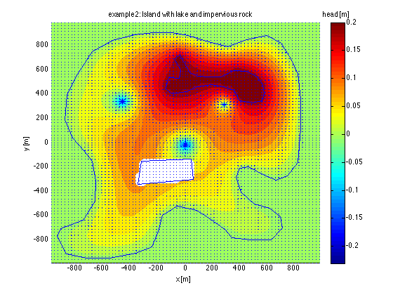

ModelScript -- Example 2 sets up 2D FDM, runs it and shows results
Contents
Arbitrary island, with an internal lake, an impervious area and wells
FXHD = -1;
INACTIVE = 0;
ACTIVE = 1;
Grid
d = 25;
xGr = [-1000:d:-d -d/2 d/2 d:d:1000];
yGr = [-1000:d:-d -d/2 d/2 d:d:1000];
gr = grid2DObj(xGr,yGr);
Reads island, lake and rock contours and wells and termine cells within
example2Data;
inIsland = inpolygon(gr.Xm,gr.Ym,Island(:,1),Island(:,2));
inLake = inpolygon(gr.Xm,gr.Ym, Lake(:,1), Lake(:,2));
inRock = inpolygon(gr.Xm,gr.Ym, Rock(:,1), Rock(:,2));
Transmissivities
Tx = gr.const(600);
Ty = gr.const(600);
Recharge
rch = 0.001;
FQ = gr.Area * rch;
Wells
for iw=1:size(well,1)
ix = find(gr.xm>=well(iw,1),1,'first');
iy = find(gr.ym<=well(iw,2),1,'first');
FQ(iy,ix) = FQ(iy,iw) +well(iw,3);
end
IBOUND
IBOUND = zeros(gr.size);
IBOUND( inIsland) = ACTIVE;
IBOUND(~inIsland) = FXHD;
IBOUND( inLake) = FXHD;
IBOUND( inRock) = INACTIVE;
Initial and fixed heads
hLake = 0.2;
hSea = 0;
IH = gr.const(0);
IH(~inIsland) = hSea;
IH( inLake) = hLake;
Run model
[Phi,Q,Qx,Qy] = fdm2(gr,Tx,Ty,IBOUND,IH,FQ);
Visualize results
figure; hold on;
xlabel('x [m]'); ylabel('y [m]');
title('example2: Island with lake and impervious rock');
phiMax = max(Phi(:)); phiMin = min(Phi(:)); hRange = phiMin:(phiMax-phiMin)/25:phiMax;
contourf(gr.xm,gr.ym,Phi,hRange,'edgeColor','none');
plot(Island(:,1),Island(:,2),'b');
plot( Lake(:,1), Lake(:,2),'b');
plot( Rock(:,1), Rock(:,2),'b');
qx = [Qx(:,1), Qx, Qx(:,end)]; qx = 0.5*(qx(:,1:end-1) + qx(:,2:end));
qy = [Qy(1,:); Qy; Qy(end,:)]; qy = 0.5*(qy(1:end-1,:) + qy(2:end,:));
quiver(gr.Xm,gr.Ym,qx,qy);
hb = colorbar; set(get(hb,'title'),'string','head [m]')

Check water balance
fprintf('Water balances:\n');
fprintf('Total water balance = %10g (should be zero)\n',sum(Q(IBOUND~=0)));
fprintf('Total recharge (active cells) = %10.0f m3/d\n',sum(Q(IBOUND>0)));
fprintf('Total discharge(fixhd + wells) = %10.0f m3/d\n',sum(Q(IBOUND<0)));
Water balances:
Total water balance = -5.24025e-14 (should be zero)
Total recharge (active cells) = 1387 m3/d
Total discharge(fixhd + wells) = -1387 m3/d